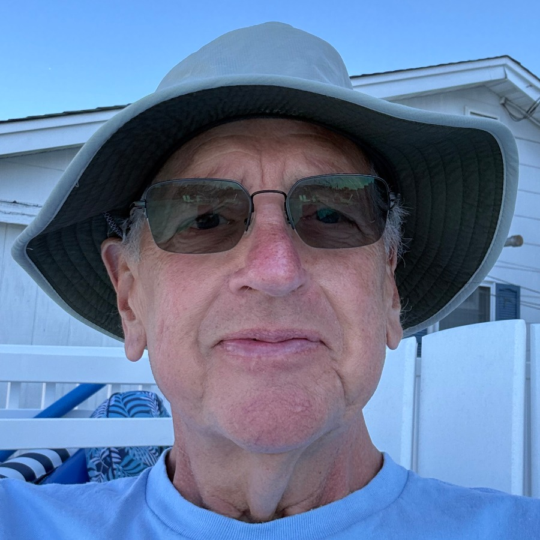

Engineer, retired. Now writing.
Cam Klockner, 72. Retired from Keller North America in 2021, after a career in construction dewatering — the application of engineering problem solving that allows contractors to "dig in the dry."
Married to Denise. Three daughters — Kristin, Andrea, and Maria. A grandfather now. Living at the Jersey Shore, in Toms River.
Now tackling creative writing, working on a novel, WOLF Awakens. This page shares articles about the learning process, related topics, and how Cam is working with AI — as teacher, brainstorming partner, research assistant, and organizer.